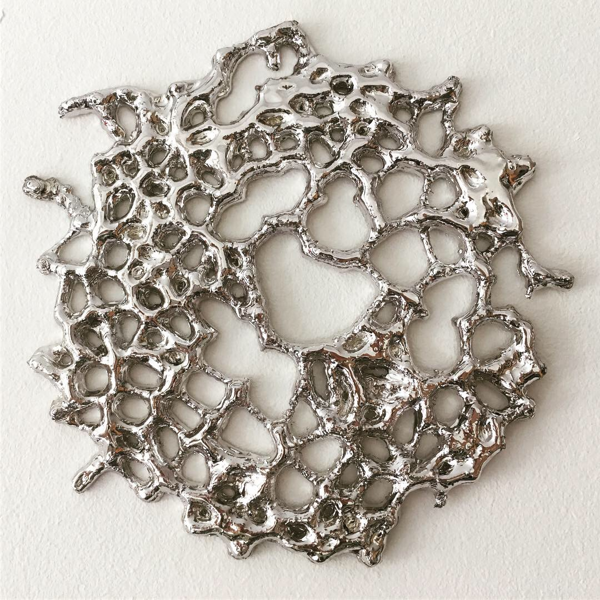

Acheiropoieta
A series of small 3D-printed algorithmic sculptures: Using various techniques borrowed from machine learning and geometry, I'm looking for ways to embed the idea of relics and spiritual symbols in the chaotic textures of generative art. The title refers to Christian relics and artworks which were considered to be "not made by human hands". ⌀ approx. 21cm — PLA, epoxy coating, chrome
Exhibitions:
- ANTIDEGREE SHOW, Croydon Arts Store, Croydon - 2019